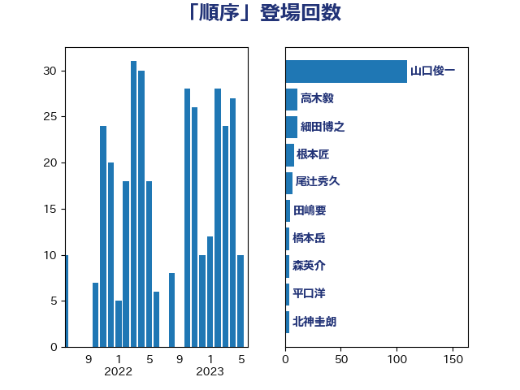

単語「順序」

| 山口俊一 | 自由民主党 | 109 回 |
| 高木毅 | 自由民主党 | 11 回 |
| 細田博之 | 自由民主党 | 11 回 |
| 根本匠 | 自由民主党 | 8 回 |
| 尾辻秀久 | 無所属 | 7 回 |
| 田嶋要 | 立憲民主党 | 5 回 |
| 橋本岳 | 自由民主党 | 4 回 |
| 森英介 | 自由民主党 | 4 回 |
| 平口洋 | 自由民主党 | 4 回 |
| 北神圭朗 | 無所属 | 4 回 |
| 三ッ林裕巳 | 自由民主党 | 3 回 |
| 馬場伸幸 | 日本維新の会 | 2 回 |
| 鈴木馨祐 | 自由民主党 | 2 回 |
| 萩生田光一 | 自由民主党 | 2 回 |
| 篠原孝 | 立憲民主党 | 2 回 |
| 竹内譲 | 公明党 | 2 回 |
| 福田昭夫 | 立憲民主党 | 2 回 |
| 福岡資麿 | 自由民主党 | 2 回 |
| 石井準一 | 自由民主党 | 2 回 |
| 牧山ひろえ | 立憲民主党 | 2 回 |
| 永岡桂子 | 自由民主党 | 2 回 |
| 杉本和巳 | 日本維新の会 | 2 回 |
| 木原稔 | 自由民主党 | 2 回 |
| 岬麻紀 | 日本維新の会 | 2 回 |
| 岡田克也 | 立憲民主党 | 2 回 |
| 山東昭子 | 自由民主党 | 2 回 |
| 小川淳也 | 立憲民主党 | 2 回 |
| 寺田稔 | 自由民主党 | 2 回 |
| 宮本岳志 | 日本共産党 | 2 回 |
| 奥野総一郎 | 立憲民主党 | 2 回 |
| 和田義明 | 自由民主党 | 2 回 |
| 佐々木紀 | 自由民主党 | 2 回 |
| 中司宏 | 日本維新の会 | 2 回 |
| 齊藤健一郎 | 無所属 | 1 回 |
| 関芳弘 | 自由民主党 | 1 回 |
| 長島昭久 | 自由民主党 | 1 回 |
| 鈴木敦 | 国民民主党 | 1 回 |
| 金子俊平 | 自由民主党 | 1 回 |
| 野田国義 | 立憲民主党 | 1 回 |
| 遠藤良太 | 日本維新の会 | 1 回 |
| 道下大樹 | 立憲民主党 | 1 回 |
| 逢坂誠二 | 立憲民主党 | 1 回 |
| 足立康史 | 日本維新の会 | 1 回 |
| 赤羽一嘉 | 公明党 | 1 回 |
| 赤木正幸 | 日本維新の会 | 1 回 |
| 谷合正明 | 公明党 | 1 回 |
| 谷公一 | 自由民主党 | 1 回 |
| 藤田文武 | 日本維新の会 | 1 回 |
| 藤巻健太 | 日本維新の会 | 1 回 |
| 茂木敏充 | 自由民主党 | 1 回 |
| 船橋利実 | 自由民主党 | 1 回 |
| 羽田次郎 | 立憲民主党 | 1 回 |
| 義家弘介 | 自由民主党 | 1 回 |
| 緒方林太郎 | 無所属 | 1 回 |
| 穀田恵二 | 日本共産党 | 1 回 |
| 稲田朋美 | 自由民主党 | 1 回 |
| 福島伸享 | 無所属 | 1 回 |
| 石井苗子 | 日本維新の会 | 1 回 |
| 石井正弘 | 自由民主党 | 1 回 |
| 矢倉克夫 | 公明党 | 1 回 |
| 清水真人 | 自由民主党 | 1 回 |
| 浜田聡 | NHK党 | 1 回 |
| 池畑浩太朗 | 日本維新の会 | 1 回 |
| 江田憲司 | 立憲民主党 | 1 回 |
| 梅谷守 | 立憲民主党 | 1 回 |
| 柳ヶ瀬裕文 | 日本維新の会 | 1 回 |
| 枝野幸男 | 立憲民主党 | 1 回 |
| 林芳正 | 自由民主党 | 1 回 |
| 松沢成文 | 日本維新の会 | 1 回 |
| 松島みどり | 自由民主党 | 1 回 |
| 松原仁 | 立憲民主党 | 1 回 |
| 杉田水脈 | 自由民主党 | 1 回 |
| 末松義規 | 立憲民主党 | 1 回 |
| 新藤義孝 | 自由民主党 | 1 回 |
| 志位和夫 | 日本共産党 | 1 回 |
| 岸田文雄 | 自由民主党 | 1 回 |
| 山田賢司 | 自由民主党 | 1 回 |
| 山本太郎 | れいわ新選組 | 1 回 |
| 寺田学 | 立憲民主党 | 1 回 |
| 宮内秀樹 | 自由民主党 | 1 回 |
| 室井邦彦 | 日本維新の会 | 1 回 |
| 安江伸夫 | 公明党 | 1 回 |
| 大西英男 | 自由民主党 | 1 回 |
| 大石あきこ | れいわ新選組 | 1 回 |
| 塩川鉄也 | 日本共産党 | 1 回 |
| 塚田一郎 | 自由民主党 | 1 回 |
| 吉良よし子 | 日本共産党 | 1 回 |
| 吉田宣弘 | 公明党 | 1 回 |
| 古川禎久 | 自由民主党 | 1 回 |
| 古屋範子 | 公明党 | 1 回 |
| 前川清成 | 日本維新の会 | 1 回 |
| 前原誠司 | 国民民主党 | 1 回 |
| 伊藤忠彦 | 自由民主党 | 1 回 |
| 伊波洋一 | 無所属 | 1 回 |
| 串田誠一 | 日本維新の会 | 1 回 |
| 中根一幸 | 自由民主党 | 1 回 |
| 中川正春 | 立憲民主党 | 1 回 |
| 上野賢一郎 | 自由民主党 | 1 回 |
| 上田清司 | 国民民主党 | 1 回 |